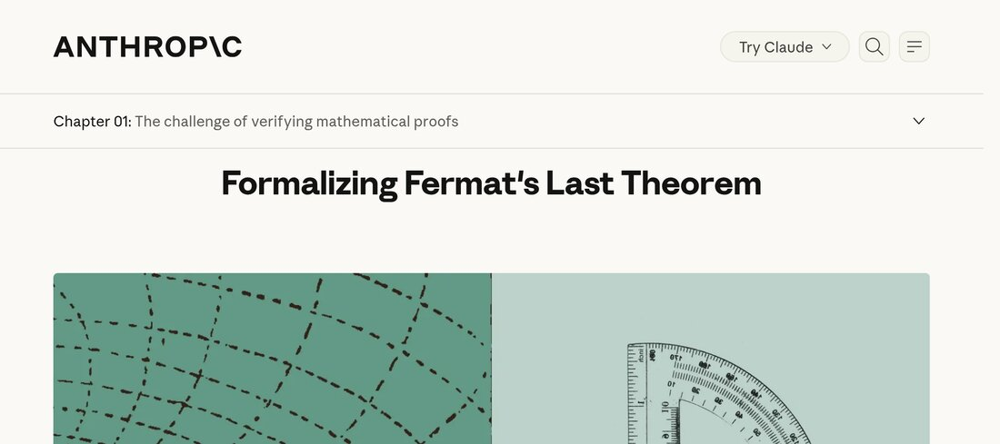
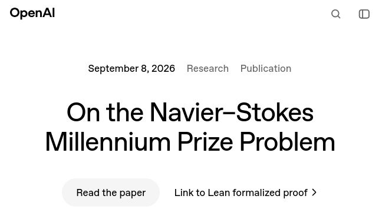
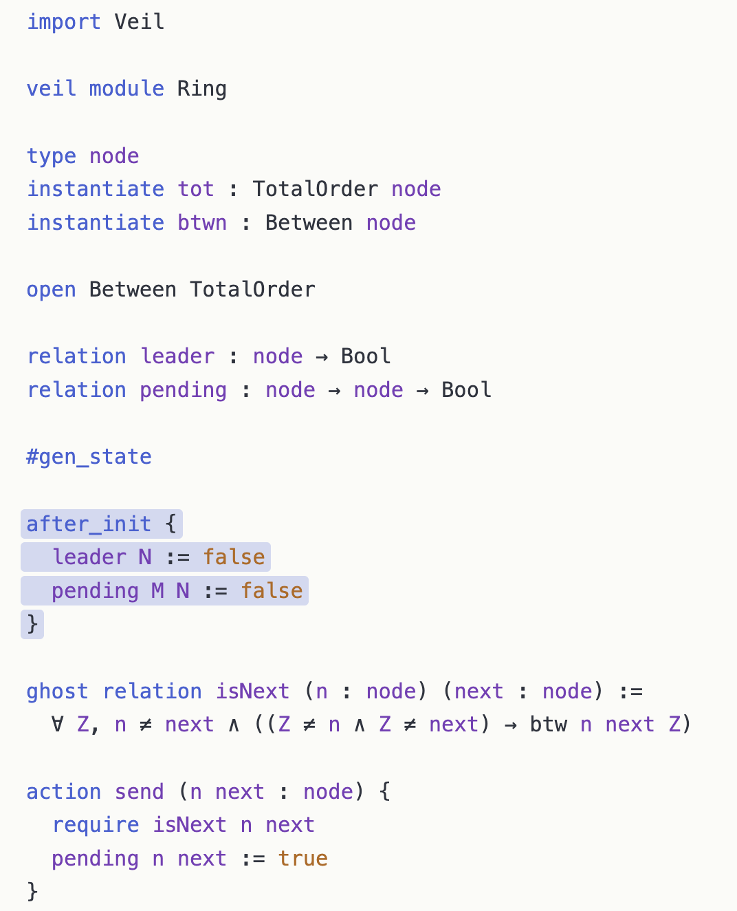
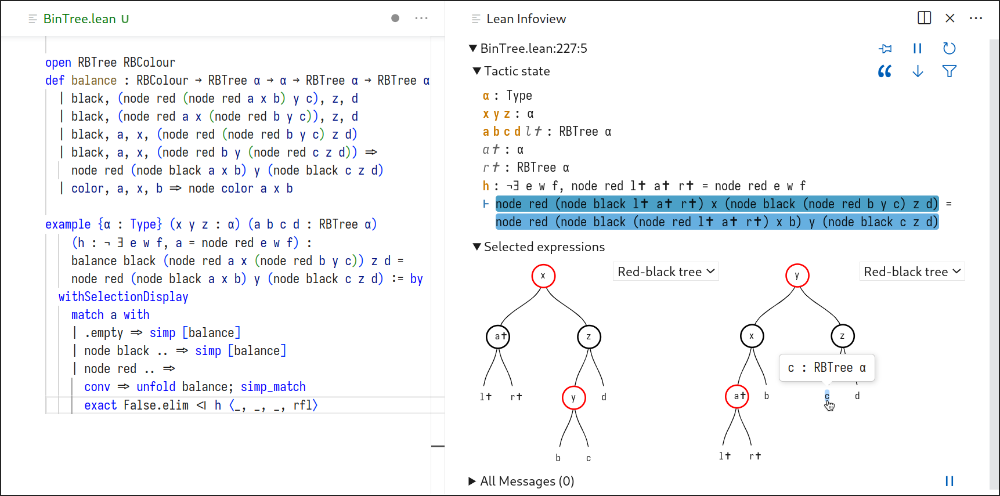

... is an interactive theorem prover for verification of mathematics and code


It is also a general-purpose programming language and its own metaprogramming language
This talk is about the latter
Could I show you some code?
Ilya Sergey (NUS)
It's Lean!
method Predicate.toArray (mut s: α → Bool)
return (res: Array α)
ensures ∀ x, sOld x ↔ x ∈ res do
let mut res := #[]
while ∃ x, s x
invariant ∀ x, sOld x ↔ x ∈ res ∨ s x do
let x :| s x
res := res.push x
s := fun y => if y = x then false else s y
return res
Why is he showing us Dafny code?
Leo
Sebastian
Whaaat?!
Parser, elaborator, tactics, language server: all written in Lean
The built-in features use the same extension mechanisms that are available to users
macro_rules
| `(if let $pat := $d then $t else $e) =>
`(match $d:term with | $pat => $t | _ => $e)
If we can build it, so can you, without forking the compiler
Focus of my PhD thesis: "An Extensible Theorem Proving Frontend"
How Lean processes a file and where you can change that
Parser
→
Macros
→
Elaborator
→
Kernel
Parser: extensible grammar; new syntax can be declared anywhere
Macros: syntax-to-syntax rewriting, hygienic by default
Elaborator: syntax to typed core terms, with full access to type inference and unification
Kernel: small, fixed, and not extensible; the safety net for everything above
Plus: the language server and the infoview UI
infixl:65 " +++ " => List.append
#eval[1, 2, 3] [1, 2] +++ [3]
[1, 2, 3]notation "‖" x "‖" => Int.natAbs x
#eval42 ‖-42‖
42
syntax "[" term " | " ident " ← " term "]" : term
syntax "[" term " | " ident " ← " term ", " term "]" : term
macro_rules
| `([$f | $x ← $xs]) =>
`(List.map (fun $x => $f) $xs)
| `([$f | $x ← $xs, $p]) =>
`(List.map (fun $x => $f) (List.filter (fun $x => $p) $xs))
#eval[4, 16, 36] [x * x | x ← [1, 2, 3, 4, 5, 6], x % 2 == 0]
[4, 16, 36]
syntax extends the grammar, macro_rules gives it meaning
macro is just a macro for syntax + macro_rules
notation is just a macro for a simple macro
infixl is just a macro for a simple notation
macro "twice!" e:term : term => `(let y := 2; $e * y)
#eval10 let y := 5; twice! y
10
Naive expansion would yield let y := 5; let y := 2; y * y, i.e. 4
The macro's y cannot capture the user's y
Lean 4 adapts Racket's algorithm for automatic hygiene without any knowledge of the grammar's binding structure [Flatt, POPL'16]
Especially important for custom tactics, i.e. proof automation: helper facts in a tactic macro do not leak into the caller's context
open Lean in
partial def printfAux (acc : Term) : List Char → MacroM Term
| [] => pure acc
| '%' :: 'd' :: cs => withFreshMacroScope do
`(fun (x : Nat) => $(← printfAux (← `($acc ++ toString x)) cs))
| '%' :: 's' :: cs => withFreshMacroScope do
`(fun (x : String) => $(← printfAux (← `($acc ++ x)) cs))
| cs =>
let lit := cs.takeWhile (· != '%')
let lit := if lit.isEmpty then cs.take 1 else lit
do printfAux (← `($acc ++ $(quote (String.ofList lit)))) (cs.drop lit.length)
macro:max "printf! " s:str : term => do
printfAux (← `("")) s.getString.toList
printfThe format string is parsed at compile time, by ordinary Lean code
#checkfun x x_1 => "" ++ x ++ " is " ++ toString x_1 ++ " years old" : String → Nat → String printf! "%s is %d years old"
fun x x_1 => "" ++ x ++ " is " ++ toString x_1 ++ " years old" : String → Nat → String
#eval"Lean is 13 years old" printf! "%s is %d years old" "Lean" 13
"Lean is 13 years old"
/--
error: Application type mismatch: The argument
"oops"
has type
String
but is expected to have type
Nat
in the application
(fun x => "" ++ toString x) "oops"
-/
#guard_msgs in
#eval printf! "%d" "oops"
Macros only see syntax. Elaborators see meaning
Inspect and create typed terms (Expr)
Ask for types, unify, synthesize type class instances
Query and extend the environment: all declarations, attributes, …
A stack of monads gives access to these: CoreM, MetaM, TermElabM, CommandElabM, TacticM
open Lean Elab Command in
elab "#count_theorems" : command => do
let env ← getEnv
let n : Nat := env.constants.fold (init := 0) fun n _ c =>
if c matches .thmInfo _ then n + 1 else n
logInfo m!"{n} theorems in scope"
#count_theorems89102 theorems in scope
example (p q : Prop) (hp : p) (hq : q) : p ∧ q := byp:Propq:Prophp:phq:q⊢ p ∧ q
constructorp:Propq:Prophp:phq:q⊢ pp:Propq:Prophp:phq:q⊢ q
exact hpp:Propq:Prophp:phq:q⊢ q
exact hqAll goals completed! 🐙
A tactic transforms the current proof state
Tactics are metaprograms: Lean code that builds proof terms
macro "triv" : tactic =>
`(tactic| first | rfl | assumption | omega | decide)
example (n : Nat) : n < n + 1 := byn:Nat⊢ n < n + 1 trivAll goals completed! 🐙
example : 2 ^ 10 = 1024 := by⊢ 2 ^ 10 = 1024 trivAll goals completed! 🐙
Existing tactics can also be extended:
macro_rules | `(tactic| trivial) => `(tactic| omega)
open Lean Elab Tactic Meta in
elab "my_assumption" : tactic => do
let goal ← getMainGoal
for h in ← getLCtx do
if !h.isImplementationDetail then
if ← isDefEq h.type (← goal.getType) then
goal.assign h.toExpr
return
throwError "no matching hypothesis"
example (p q : Prop) (hp : p) (hq : q) : q := byp:Propq:Prophp:phq:q⊢ q
my_assumptionAll goals completed! 🐙
The kernel re-checks the resulting proof: a buggy tactic cannot prove false things
Attributes and environment extensions: @[simp], @[grind], your own databases of lemmas
Deriving handlers: deriving Repr, BEq, Hashable, ToJson, …
Linters: project-specific style and correctness checks
Code actions and "Try this" suggestions in the editor
Widgets: custom interactive UI in the infoview, written in Lean (plus a bit of JS)
What People Have Built
Mathematical notation that looks like the textbook: ∑ i ∈ Finset.range n, i, ∫ x in a..b, f x, …
Domain-specific automation, all written in Lean:
Tactics: ring, field_simp, linarith, positivity, norm_num, gcongr, …
Attribute-driven proof search: fun_prop, continuity, measurability over lemmas users tag themselves
Code generation: @[to_additive] derives additive versions of multiplicative theorems, @[simps] derives simp lemmas for definitions
Linters enforcing Mathlib's conventions: unusedTactic, flexible (no rw after a non-terminal simp), multiGoal, directoryDependency
method insertionSort (arr : Array Int)
returns (res : Array Int)
requires arr.size > 0
ensures SortedUpTo res res.size
ensures sameElems res arr
do
let mut res := arr
let mut n : Nat := 1
while n ≠ res.size
invariant res.size = arr.size
invariant SortedUpTo res n
invariant sameElems res arr
do
...
n := n + 1
return res
prove_correct insertionSort by
velvet_vcgen [insertionSort] with try finish
Imperative code with contracts and loop invariants, embedded in Lean
Programs compile and run; #derive_tester_for tests contracts before you prove them
SMT-style automation, with a fall-back to interactive proofs
A proved method yields an ordinary Lean theorem, insertionSort.spec

A DSL for specifying and verifying distributed protocols, embedded in Lean
Properties as safety and invariant clauses in decidable fragments of first-order logic
Testing first: #model_check explores small instances, sat/unsat trace asks SMT about bounded executions; counterexamples show up in the infoview
#check_invariants proves inductive invariants push-button via SMT, with a fall-back to interactive proofs

A widget shows subterms of the goal as red-black trees, and you can click into them
#html jsx%{<b>You can use HTML in Lean {.text s!"{1 + 3}"}!</b>}
A documentation authoring tool, as a Lean DSL
Code examples are elaborated: they cannot go stale, and you can click on them
Used for the Lean reference manual, the Lean website, … and this talk
import VersoSlides
#doc (Slides) "Customizing the World with Lean" =>
[...]
# Verso
A documentation authoring tool, as a *Lean DSL*
Code examples are *elaborated*: they cannot go stale, and you can click on them
Used for the Lean reference manual, the Lean website, … and this talk
:::slideSource
:::
elab_rules : command
| `(command|#doc ( $genreSyntax:term ) $title:str =>%$tok) => …
replaceCategoryParser `command versoBlockCommandFn
#doc swaps out the parser for Lean's command category for the rest of the file
Each block of markup becomes a "command": Lean's incremental re-checking works for documents for free
Inside Lean code blocks, the original parser is swapped back in
Attributes: @[directive], @[role], @[code_block] register new markup, like slideSource before
Elaborator: nested use of Lean's own elaborator, capture and post-processing of produced metadata
Language server: own handlers for hover, go-to-definition, outline, folding and semantic highlighting
Code actions and linters: renumber lists, fix directive nesting, typography suggestions
From widget to hosted Verso doc
Lean is extensible from within itself: parser, macros, elaborators, tactics, UI
The same mechanisms power the core language and user libraries
The kernel stays small: extensions cannot compromise soundness